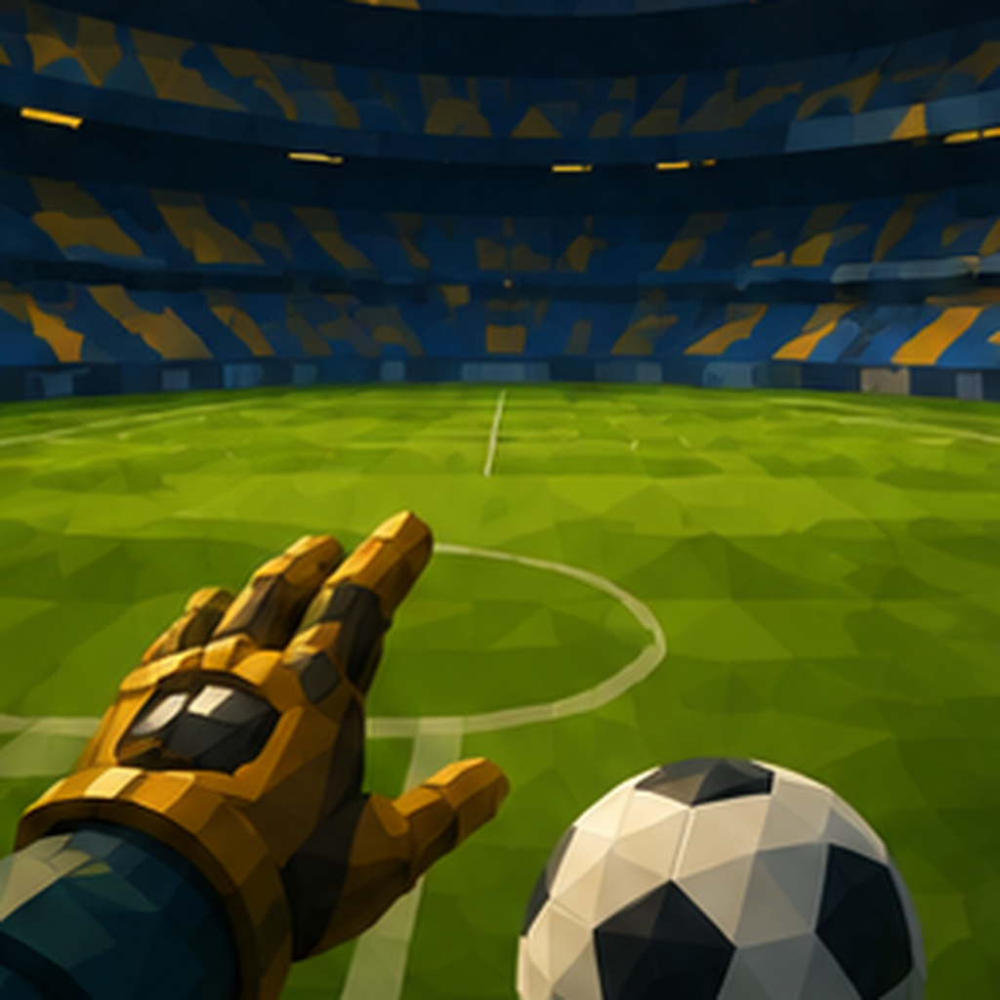

Buenas noches, Daniel.
Proyecto Aurora
Mundo activo · Deportivo
Fantasía
Sigamos justo
donde te quedaste.
Retoma tu avance con calma: escena, ritmo y decisiones te están esperando en el estudio.
Último punto narrativo: Entrenamiento, caída y regreso.

Mundo activo
Proyecto Aurora
Continuar narración reciente
Última escena:Entrenamiento previo a la caída
Estado:Borrador inicial · 3 nodos abiertos
Elige cómo entrar